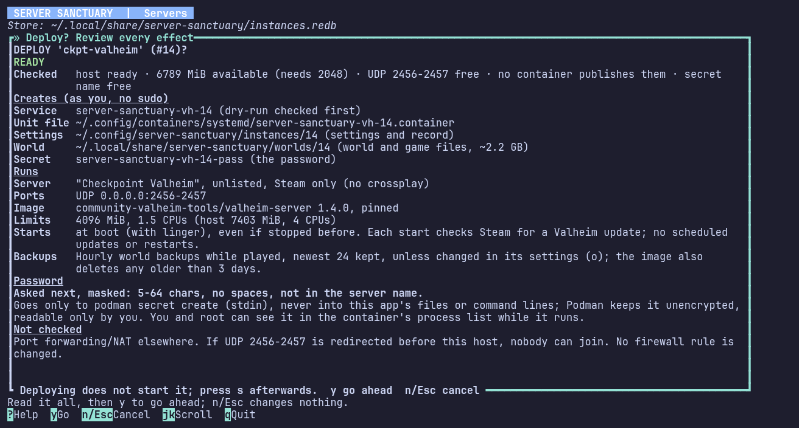
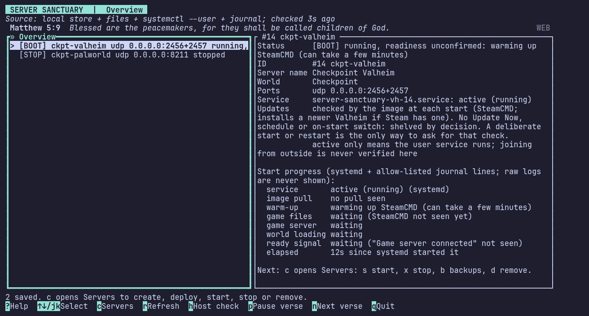
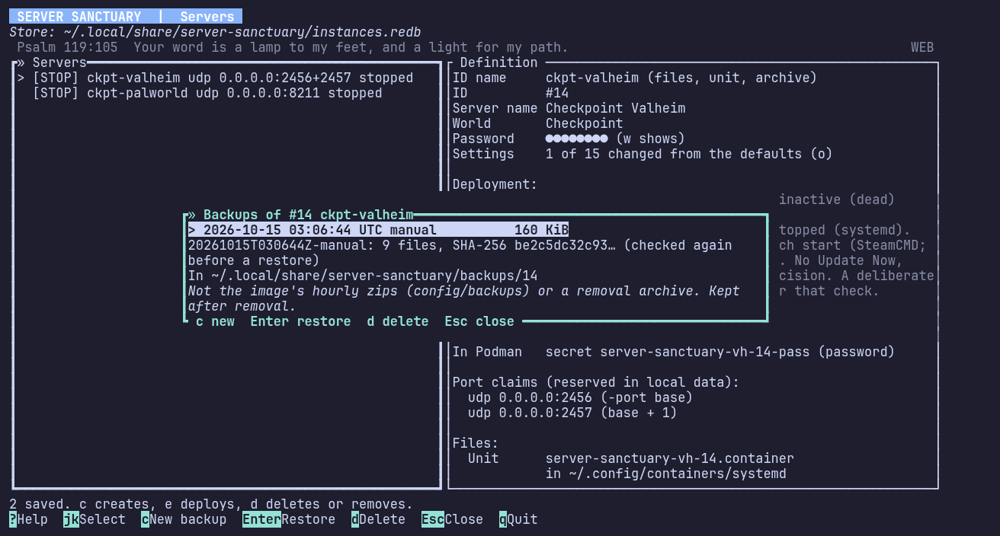
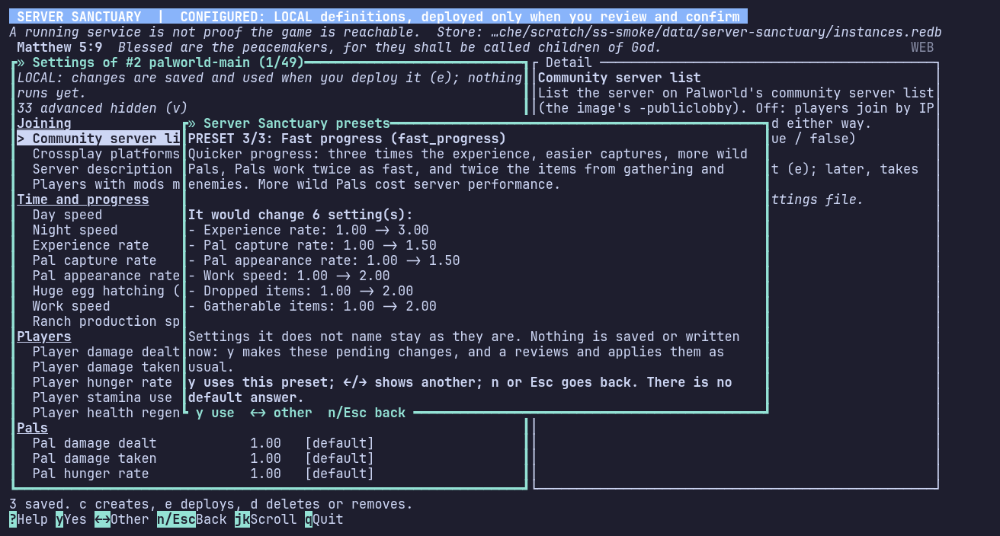

It comes back on its own
systemd restarts a server that fails and brings your servers back after a reboot. One you stopped stays stopped until you start it.

Your own Valheim, Palworld and custom game servers, on a Linux machine you control, run from the terminal.
Every deployment, settings change and setup step is shown to you in full before it happens. Nothing changes until you press y.
Version 1.0.0, released 31 October 2026.

The Servers screen reads systemd and the game’s own log lines, and says what it saw. UP means the game reported it is connected.
It also tells you what it has not checked: whether players outside your network can get in.
Every deployment opens a review of everything it will create and run, and what it leaves unchecked. y goes ahead; n or Esc changes nothing.


Everything that keeps a single server safe and working comes with the free tier. Pro adds convenience for people who run many.
systemd restarts a server that fails and brings your servers back after a reboot. One you stopped stays stopped until you start it.

Each start shows its stages as they happen, from systemd and the game’s own log lines: warm-up, game files, world loading, ready.
World backups when you ask, or daily or weekly with a number to keep. Each has a SHA-256 that is checked again before a restore.


Valheim and Palworld settings in plain names, with presets for Palworld. Every change is listed before it is saved.
Each time a server starts, it checks Steam for a newer game build and installs it first.
$ server_sanctuary status --json
$ server_sanctuary backup 3
$ server_sanctuary ban 3 76561190000000001
$ server_sanctuary stop 3Ban and unban players, see who is online and what happened in the Log, and drive it all from scripts with the headless commands.
[CONF] valheim-main udp 2456+2457
Next: e reviews a deployment.
Describe it: game, name, world, ports and settings. Nothing runs yet.
[STOP] valheim-main udp 2456+2457
Next: s starts it, x stops it, b backups, d removes it.
Read the review and press y. It deploys as you, without sudo.
[BOOT] valheim-main udp 2456+2457
running, readiness unconfirmed: warming up SteamCMD
Press s and watch each stage arrive, up to the ready signal.
[ UP ] valheim-main udp 2456+2457
game reported connected; external join not verified
Friends join. Crash restarts and backups carry on without you.
For many servers on many machines. It never holds back the basics.
The servers of up to 25 machines in one list, reached over SSH with your own keys. Start, stop or restart any of them, or all at once.
One ban reaches every server of that game on every machine, and new servers start with the shared ban list.
One settings change for several servers of a game, with one review, and their restarts one after another.
Everyone seen on this machine: first and last seen, servers, joins and time played, with an export.
One-time prices, not subscriptions, for one person each. A licence covers every 1.x release. 2.0 will be a paid upgrade, discounted for owners.
| Licence | Price | Game servers per machine | Machines | Pro features | Buy |
|---|---|---|---|---|---|
| Free | $0 | 2 servers per machine | Any number of machines | No Pro features | No key needed |
| Community | $15 once | Unlimited servers | Up to 5 machines | No Pro features | Buy Community, $15 |
| Pro | $30 once | Unlimited servers | Up to 25 machines | Pro features | Buy Pro, $30 |
| Pro Upgrade | $15 once | Unlimited servers | Up to 25 machines | Pro features, added to Community | Buy Pro Upgrade, $15 |
Free runs up to 2 game servers on each machine, on as many machines as you like, with no key.
If a machine has more than 2 and no valid licence, say after a refund or 30 days offline, you get 24 hours’ warning. Then the 2 you pick, or the 2 oldest, keep running. The others go on a licence hold: stopped cleanly with the world saved, and kept stopped.
A held server is never deleted. You can still view it, read its log, back it up, ban players on it and remove it. The hold lifts when the machine is licensed again or is down to 2 servers.
Adding your key to a machine uses one of its machine slots. The app checks the licence with Polar when it starts and once a day, and keeps working offline for 30 days after a successful check.
To move a licence, release the machine in the app, from 7 days after it took the slot. Lost or wiped a machine that holds one? Email us and we free it.
Polar handles payment, tax and receipts as merchant of record.
Refunds within 14 days of purchase, no questions asked: email us or use your Polar order page. A refunded key stops working and its machines fall back to Free.
Read this before you buy. If something here rules your setup out, the free tier will show you the same thing at no cost.
The Host check runs read-only checks for all of this. On Ubuntu Server it can install Podman and turn on linger, one step at a time after you approve each. Your password goes to sudo, never to the app.
SHA256SUMS.Tested in October 2026, on the builds leading up to the 1.0.0 release.
One program for Linux on x86_64. Each release comes with a SHA256SUMS file so you can check your download.
No. Server Sanctuary runs on your own Linux machine: a home server, a spare PC or a server you rent. Each game server is a rootless Podman container under a systemd user service, owned by your user.
Each server’s detail shows how to join: your local address and port for players at home, and your public address with the ports to forward on your router for everyone else. With Valheim’s crossplay on, it shows the join code too. Port forwarding is up to you, and the app can’t check that players get in.
One STUN request to learn your public address for the join details, kept in memory only. A licence check with Polar when the app starts and once a day. Podman pulls the game’s image, and the server downloads the game when you start it.
Valheim and Palworld run unmodded. Any other game server you can describe in a TOML profile can run as a custom server, and a commented Minecraft Bedrock example is included.
Chi Rho Code is a Christian company. When the status line has nothing else to say, it shows a short verse from the World English Bible: p pauses it, n skips to the next. A notice, an error or progress always takes its place.
Your licence keeps covering every 1.x release. 2.0 will be a paid upgrade with a discount for existing owners, set when 2.0 is announced.
Server Sanctuary is free for 2 servers on every machine, with no key and no account. Buy a licence when you need more.
Download for LinuxEmail help@chirhocode.com. We aim to answer within 48 hours.
Write to us to free the slot of a machine that was lost or wiped, about your licence or a refund, or when something doesn’t work.